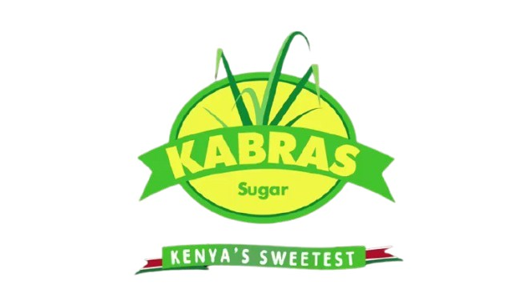
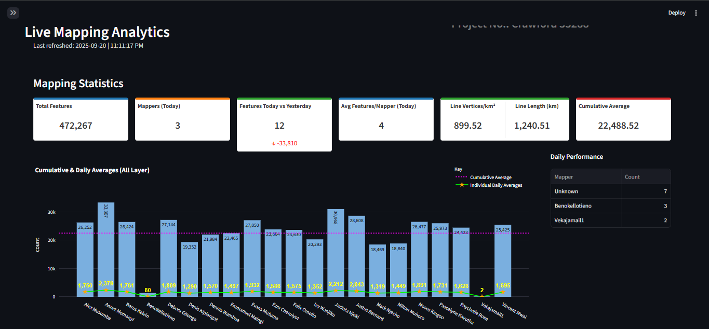
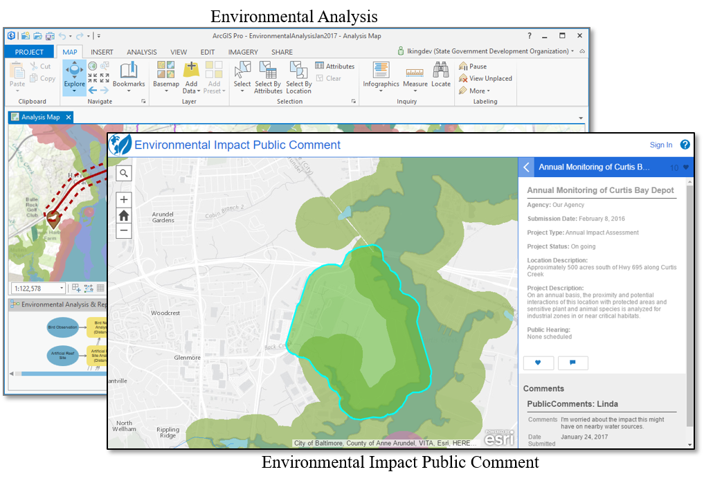
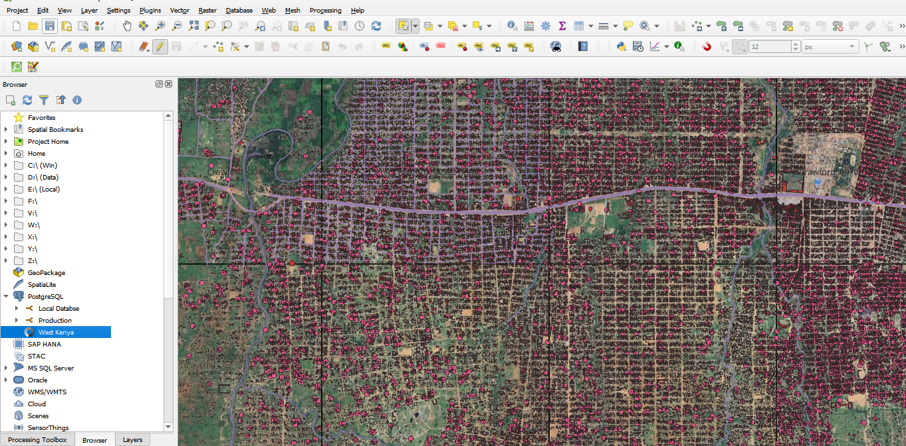
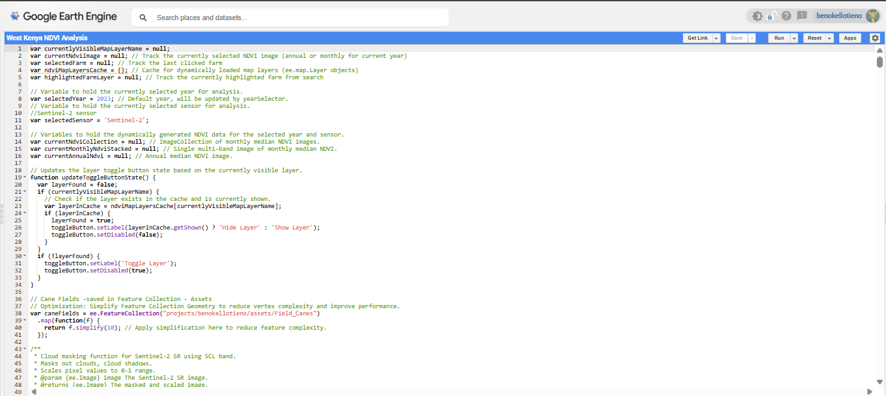
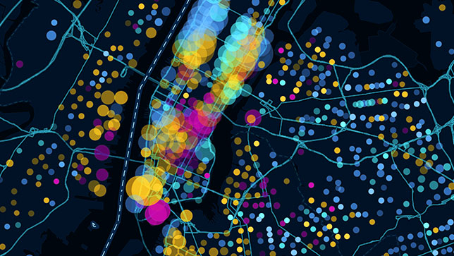

Geospatial Insights That Improve Real-World Decisions
Bridging spatial science and data analytics to deliver decision-ready outputs for agriculture, infrastructure, environmental monitoring, and digital mapping programs.
- Research-driven spatial analysis
- Reliable GIS data systems and QA
- Actionable dashboards and reporting
About Me
Passionate geospatial professional with 10+ years of experience delivering impactful spatial data solutions and digital mapping applications.
I am a seasoned GIS specialist with ten years of experience in geospatial analysis, remote sensing, environmental management, and a strong focus on geospatial research, applied spatial statistics, and bridging spatial and non-spatial data for comprehensive insights.
Throughout my career, I have led and contributed to various large-scale projects, utilising cutting-edge GIS technologies and tools to provide critical data analysis and support decision-making. My expertise spans from agricultural monitoring, infrastructure development, and data management, equipping me to deliver high-quality geospatial solutions tailored to diverse sectors.
Technical Skills
Technologies
Featured Projects
My portfolio covers applied GIS, web-based solutions, GIS application development, and data visualization dashboards.

Mapping of Cane Fields for Kabras Sugar West Kenya
Addressed challenges with an outdated agricultural database by leading a large-scale data collection exercise to update cane field records and improve supply chain management.
Problem • Approach • Tools • Impact
Kenyan Standard Gauge Railway (SGR) Construction
Contributed to one of Kenya's largest infrastructure projects by creating foundational GIS datasets to guide sustainable and efficient construction, minimizing environmental impact.
Problem • Approach • Tools • Impact
Entebbe International Airport GIS Database Update
Executed a full-scale update of the airport's GIS database, creating a digital twin to enhance safety, support expansion, and meet international aviation standards.
Problem • Approach • Tools • Impact

Mapping Analytics Dashboard
A concept for a live monitoring dashboard that turns geospatial and tabular data from field mapping projects into actionable insights for project teams.
Problem • Approach • Tools • Impact

Environmental Monitoring & Conservation GIS
Leveraged a strong background in environmental studies to manage GIS projects integrating remote sensing and spatial modeling, delivering key insights for conservation.
Problem • Approach • Tools • Impact

Juba City Mapping: Land Information Management System (LIMS)
Led the development of a Land Information Management System (LIMS) to centralize land records, improve data transparency, and reduce disputes in Juba, South Sudan.
Problem • Approach • Tools • Impact

West Kenya Sugarcane Management & NDVI Analysis
Contributed to an NDVI-based crop management system to monitor 100,000+ sugarcane fields, overcoming the limitations of traditional surveys and improving farm management.
Problem • Approach • Tools • Impact

Web-based GIS Application for Environmental Data Analysis and Visualization
A concept showcasing the ability to build interactive web GIS apps that integrate spatial databases with analysis tools for environmental monitoring and resource management.
Problem • Approach • Tools • Impact
Website Design & Development
Design and develop responsive, modern websites tailored to different industries, ensuring functionality, aesthetics, and a seamless user experience.
Problem • Approach • Tools • Impact
Soft Skills
Soft Skills & Professional Attributes.
Interpersonal Skills
Building strong professional relationships and collaborating effectively.
Contingency Analysis
Proactive problem-solving and diagnosis in complex situations.
Dedication & Commitment
Dedicated to achieving project goals with focused determination.
Communication
Clearly articulating technical concepts to diverse stakeholders.
Time Management
Efficiently prioritizing and executing tasks to meet deadlines.
Delegation
Effective assignment of responsibilities to optimize team performance.
Attention to Detail
Analytical and precise approach in all deliverables.
Leadership
Guiding teams to success with vision and inspiration.
Research & Critical Thinking
Applying rigorous methodologies to derive actionable insights from complex geospatial problems.
Capacity Building
Proven ability to train and mentor teams in geospatial data collection and analysis.
Experience & Education
My professional journey and educational background in Geospatial Technologies.
Senior GIS Technician
Ramani Geosystems Limited
2022 - Present
- Provide training and coaching, assign tasks, and monitor quality and quantity of work for GIS Technicians, Assistant GIS Technicians, and interns.
- Perform data analysis using ArcGIS/QGIS and related extensions, relational databases, and other software; apply GIS capabilities to solve complex spatial and relational problems.
- Conduct data analysis and prepare training manuals, data reports, and maps.
- Monitor and analyze project and programmatic budgets.
- Communicate complex technical issues both verbally and in writing.
- Developed automation scripts in Python/PyQGIS to streamline data cleaning, validation, and mapping workflows, reducing manual processing time by 40%.
- Designed interactive dashboards linked to live PostgreSQL/PostGIS databases, enabling real-time monitoring of field data collection and mapping progress.
- Applied Google Earth Engine for large-scale remote sensing analysis, including vegetation monitoring, climate-related change detection, and temporal NDVI analysis.
- Conducted advanced spatial and statistical analysis integrating both geospatial and non-spatial datasets to support agricultural monitoring and environmental resilience projects.
GIS Technician - Team Lead
Ramani Geosystems Limited
Nov 2015 - Aug 2022
- Provided technical training to new production team members and offered support to visiting students and interns.
- Supervised mapping technicians.
- Allocated assignments, duties, and tasks.
- Compiled and reviewed initial data outputs from the production team before submission.
- Compiled data in both ArcMap & AutoCAD, produced soft copy maps, and managed hardcopy printing for clients.
- Conducted first-level quality control assessments of work from the production team.
- Performed other related technical and administrative duties as required.
- Provided basic technical assistance and guidance to production team members.
Assistant GIS Technician
Ramani Geosystems Limited
Dec 2014 - Oct 2015
- Conducted terrain editing using stereo workstations with either stereo image pairs or Lidar point clouds to support accurate data mapping for migration projects.
- Performed digital stereo mapping using stereo pairs to create 3D vector data for GIS or CAD platforms, ensuring consistency in data structures for effective data transformation.
- Executed Lidar point cloud processing including project set-up, cloud calibration, classification, terrain modeling, and data product creation, with an emphasis on data validation.
- Led Quality Assurance & Quality Control efforts for project work, ensuring proper consistency of processes and deliverables in line with data migration and transformation standards.
- Conducted technical research to remain current with industry developments and best practices, supporting the continual improvement of data mapping and validation methodologies.
Ramani Geosystems Internship
Ramani Geosystems Limited
Jun 2014 - Nov 2014
- Created innovative geospatial vector dataset products using a range of GIS tools (2D and 3D mapping) and data analysis techniques, resulting in improved data accuracy and faster project delivery.
- Enhanced the integrity and accessibility of geospatial databases by ensuring accurate mapping specifications and data quality using PostgreSQL and PostGIS, aligning with rigorous data transformation standards.
- Compiled, symbolized, and created maps using advanced cartographic techniques while documenting steps for data transformation and cleansing to support quality migration processes.
- Enhanced and geo-referenced aerial imagery and cadastral plans to improve spatial accuracy and facilitate precise data mapping and transformation requirements during system migration.
- Delivered basic technical assistance internally and externally, contributing to improved operational efficiency and stakeholder satisfaction.
- Collaborated with GIS Technicians and Assistants to ensure the delivery of high-quality data that met client specifications and adhered to established data transformation guidelines, improving client satisfaction.
- Reviewed and improved geospatial vector products' quality through detailed assessments to ensure data accuracy, reliability, and consistency with data migration standards.
- Provided technical and administrative support for the Technical Manager, enhancing team efficiency by ensuring timely and accurate completion of data quality and mapping tasks.
Bachelor of Arts in Geography
University of Nairobi
Oct 2009 - Dec 2013
- Specialized in Spatial Data and GIS Applications
- Coursework included: Physical and Human Geography, Environmental Studies, Cartography, Remote Sensing, GIS, and Spatial Analysis.
Short Courses & Accomplishments
- Disaster Management - Incident Command System (ICS 1 and 2) and First Aid training: St. John Ambulance Headquarters, Nairobi (Dedicated Member, 2012).
- CPR/First Aid - Emergency Life Support, Water Rescue, and Decision Making in Incident Management: Collaboration between Polish and Kenyan governments at St. John Ambulance Headquarters, Nairobi (2012).
- Emergency Operation Centre (EOC) - Disaster Management: Humanitarian Peace Support School (HPSS), Nairobi Embakasi (2018).
- Python for Data Science (Self-study - Udemy).
- Google Earth Engine (Self-study - Udemy).
- Data Visualization with Power BI, Plotly Dash, and Streamlit (Self-study - Udemy).
Certifications
Specialized training and certifications in GIS and Data Science.
GIS Specialization
University of California (Coursera)
GIS Mapping and Spatial Analysis Specialization
University of Toronto (Coursera)
Esri MOOC – Cartography, Spatial Analysis
Esri
Get In Touch
Ready to collaborate on your next project? Let's discuss how we can work together